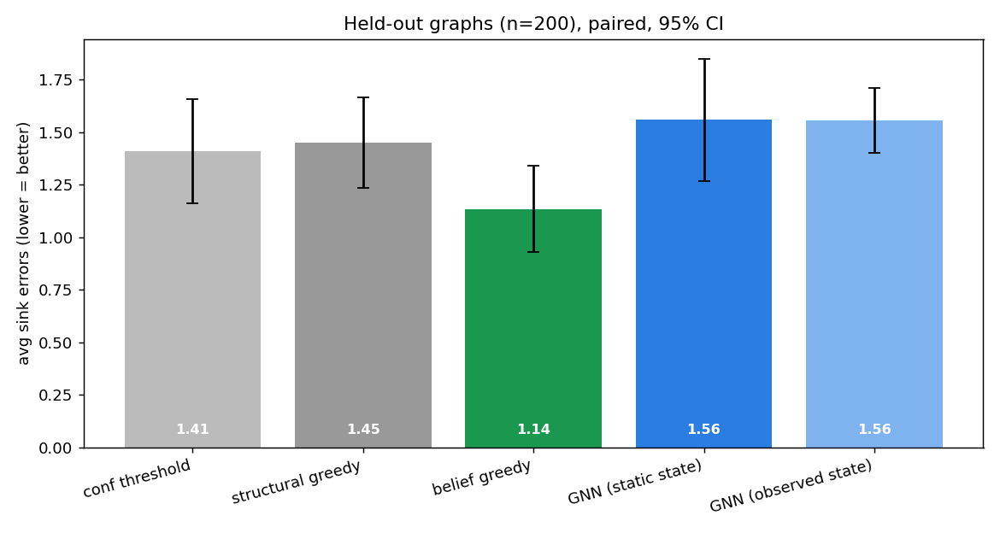
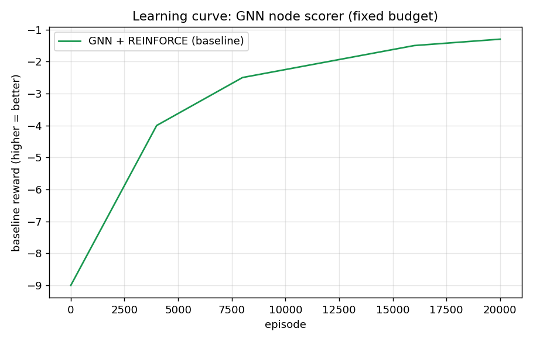
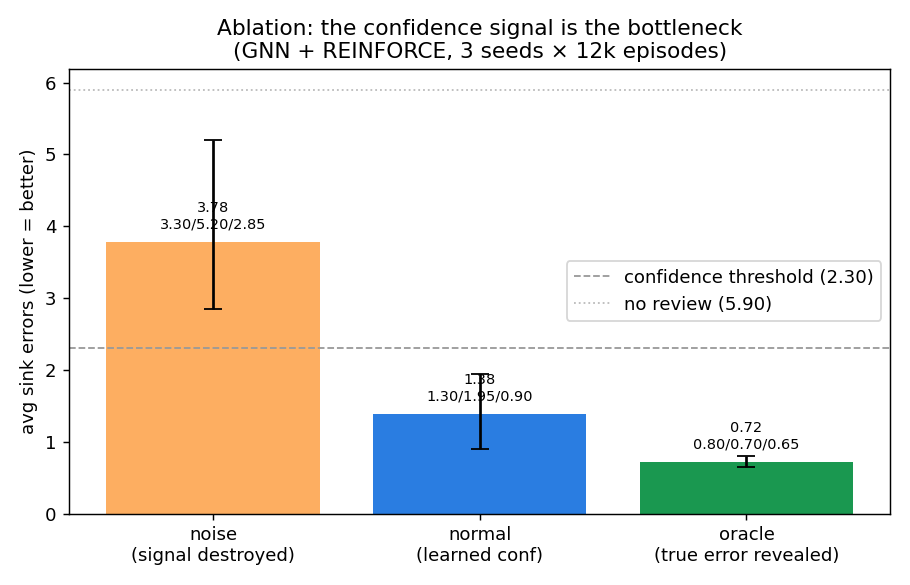
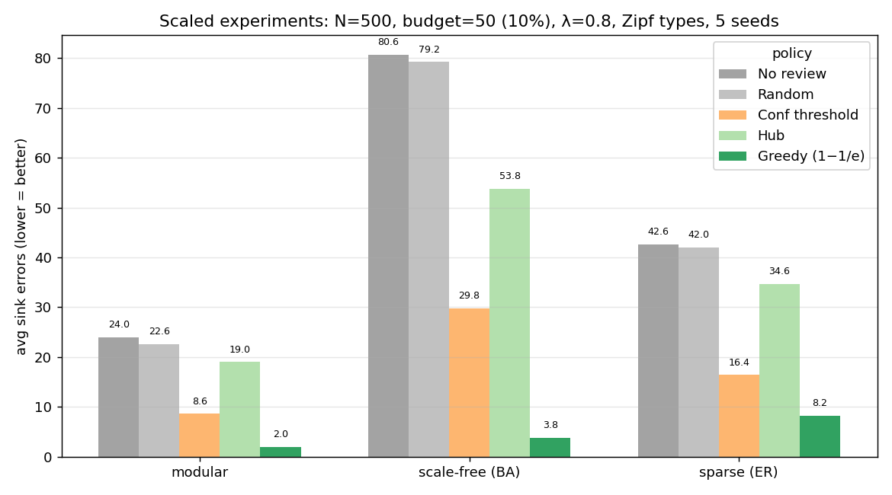
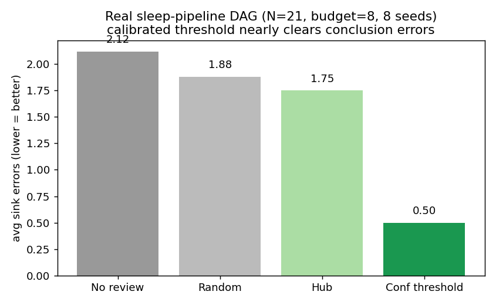

0 一句话
AI 帮实验室洗日记、标文献、跑分析。结果互相依赖：时间反了，潜伏期错，效率错，结论不可信。
人不可能全查。我们用 RL 学一个只读建议器：下一步审哪个节点，让更少错误走到结论。
机器不盖章 只读排序 人点裁决才有收据
1 为什么是真的
我们实验室睡眠日记：13,990 条 / 237 人。人只改了 75 处（0.54%）。
这 75 处 76% 是同一种错（order_error，p<0.0001）。
错不会待在原地：时间错 → 潜伏期错 → 效率错 → 结论错。
2 走过的弯路
第一版做成逐条 bandit。阈值赢了 Q-learning（2.81 vs 3.38）。
原因：逐条审把依赖图压平了，RL 没东西可学。76% 一种错，最优策略退化成 if 规则。
这个失败没藏，它是重构的理由。
3 重构：下一个审哪个
证据画成有向图。智能体每步选一个节点审。审对了下游跟着变。
真 MDP：状态有图和剩余预算，奖励只在最后。
4 结果
数字 = 到达结论的错误数，越低越好。

| 方法 | 结论错误 |
|---|---|
| 不审 | 5.90 |
| 置信度阈值 | 2.30 |
| 结构贪心 | 1.80 |
| REINFORCE (MLP) | 1.40 |
| PPO (MLP) | 1.60 |
| GNN + REINFORCE | 1.54 ± 0.46 |
| DQN | 5.10（退化） |
| Oracle | 0.00 |

诚实：GNN 均值 1.54 和贪心（1.80）、MLP REINFORCE（1.40）相当，不是稳定碾压。最佳种子 1.00 有空间，要看多种子。
DQN 退化——稀疏终局奖励喂不饱价值函数。这里该用策略梯度。
5 消融：剩下的误差在置信度里
同样 GNN，换三种置信度：

| 喂什么置信度 | 结论错误 |
|---|---|
| 噪声 | 3.78 |
| 正常 | 1.38 |
| 上帝视角 | 0.72 |
6 放大：500 节点
三种 500 节点图：模块化、无标度（少数 hub 连一堆普通节点）、稀疏随机图。预算 50（10%）。

| 图族 | 不审 | 阈值 | 贪心 |
|---|---|---|---|
| 模块化 | 24.0 | 8.6 | 2.0 |
| 无标度 (BA) | 80.6 | 29.8 | 3.8 |
| 稀疏 (ER) | 42.6 | 16.4 | 8.2 |
诚实说：这批 500 节点的数字是贪心启发式，不是 RL。说明问题在规模下依然有趣，贪心是必须打赢的基线。
7 我们自己的管道
splsleep SCHEMA 编成 21 节点真图：原始时间 → 差值 → SOL/WASO/TST/效率 → 结论。

| 策略 | 结论错误 |
|---|---|
| 不审 | 2.12 |
| 置信度阈值 | 0.50 |
| hub | 1.75 |
8 OpenAI 两个基准
HealthBench（医生 rubric + worst-of-n + 共识/Hard 拆分）教我们怎么评。
BioBasicsBench（原始湿实验证据 + 错误检测 + 「证据不足」）教我们 everyday science 的失败长什么样——假设压过对照，和我们 76% order_error 同一物种。
我们采纳：偏学分收据、错误检测当一等技能、「证据不足」当显式动作。
我们加的：预算、依赖图、延迟到结论的惩罚。他们没建这个。
9 决策指南
| 如果你在什么情况 | 用什么 |
|---|---|
| 置信度信号校准得好 | GNN 或结构贪心都行 |
| 置信度噪声大 | 别用 RL，静态阈值更稳 |
| 预算紧、错误按类型聚集 | 结构贪心（便宜、强） |
| 能改进预测器 | 改置信度比改策略收益大 |
| 图很大、无标度 | 贪心影响最大化（守 hub） |
| 就是我们今天的小管道 | 校准阈值 |
10 边界：机器不盖章
- 建议器只读证据图，输出排序。
- 人点「裁决」才产生收据。
- 建议永远不会自动变成裁决。
- 真实原始数据（13,990 行、75 行 CSV）不进 git。
11 组内分工
指导：Maia ten Brink, PhD（Stanford Psychophysiology Lab — 睡眠数据）· Zhangyang Gao, PhD (AI4Science, Shanghai AI Lab — SciForge)
- 1 组长 + 时间线 + L2D 经典
- 2 策略梯度 + 置信度信号
- 3 环境 + GNN + 规模
- 4 基线 + 对照 + HealthBench/BioBasics
- 5 동채하 叙事 + 郑心联络 + GO 搜寻 + 写作 + 英文发表 + 文献综合
0 One sentence
AI already cleans diaries, labels papers, runs analyses. Outputs depend on each other: a flipped time becomes a wrong latency, a wrong efficiency, an untrustworthy conclusion.
A human cannot check everything. We train a read-only RL suggester: which node to review next, so fewer errors reach the conclusion.
Machine never stamps read-only ranking receipt only on human verdict
1 Why this is real
Our lab's sleep-diary data: 13,990 records, 237 people, from the one-year EMA collaboration with Maia ten Brink. Humans corrected only 75 of them (0.54%).
Those 75 are not scattered — 76% are the same mistake (order_error: times written in the wrong order; p < 0.0001).
The mistake does not stay put. Wrong time → wrong latency → wrong efficiency → wrong conclusion.
2 The detour we took (honest)
Our first version was a bandit: "review this item or not," one at a time. Result: a simple threshold beat Q-learning (2.81 vs 3.38).
Why? Per-item review flattens the graph. RL had nothing non-trivial to learn. With 76% one type, the best policy collapses into an if-rule.
We did not hide this failure. It is the reason for the reframe.
3 Reframe: from "review this item?" to "which node next?"
Draw the evidence as a directed graph. The agent walks the graph and picks one node to review. A good review changes the downstream.
This is a real MDP: the state has the graph and the remaining budget; the reward arrives only at the end.
4 Results
All numbers are errors that reach a conclusion. Lower is better.
| Method | Sink errors |
|---|---|
| No review | 5.90 |
| Confidence threshold | 2.30 |
| Structural greedy | 1.80 |
| REINFORCE (MLP) | 1.40 |
| PPO (MLP) | 1.60 |
| GNN + REINFORCE | 1.54 ± 0.46 |
| DQN | 5.10 (degenerate) |
| Oracle | 0.00 |
Honestly: GNN mean 1.54 is comparable to structural greedy (1.80) and MLP REINFORCE (1.40). It is not a stable win. Best seed 1.00 shows headroom, but it takes multiple seeds.
DQN degenerates to random — a sparse terminal reward cannot feed a value function. Policy gradient is the right tool here.
5 Ablation: the remaining error lives in the confidence signal
Same GNN, three kinds of confidence:
| What we feed as confidence | Sink errors |
|---|---|
| Noise | 3.78 |
| Normal | 1.38 |
| Oracle | 0.72 |
6 Making the graph bigger: 500 nodes
Three 500-node graphs: modular, scale-free, sparse random. Budget 50 (10%).
| Family | No review | Threshold | Greedy |
|---|---|---|---|
| Modular | 24.0 | 8.6 | 2.0 |
| Scale-free (BA) | 80.6 | 29.8 | 3.8 |
| Sparse (ER) | 42.6 | 16.4 | 8.2 |
7 Our own pipeline
splsleep SCHEMA as a 21-node graph: raw times → differences → SOL/WASO/TST/efficiency → conclusions.
| Policy | Sink errors |
|---|---|
| No review | 2.12 |
| Confidence threshold | 0.50 |
| Hub | 1.75 |
8 OpenAI's two benchmarks
HealthBench (2025) taught us how to evaluate: meaningful, trustworthy, non-saturated, and report worst-of-n.
BioBasicsBench (2026-11, wet lab) showed what everyday-science failure looks like: an assumption overriding a control. Our 76% order_error is the same species.
We adopt: partial-credit receipts, error detection as a first-class skill, and "the evidence is not enough yet" as an explicit action.
We add what they did not build: a budget, a dependency graph, and a penalty delayed to the conclusion.
9 When to use which rule
| If you are here | Use this |
|---|---|
| Confidence well calibrated | GNN or structural greedy — both fine |
| Confidence noisy | Do not use RL — a static threshold is more robust |
| Tight budget, type-clustered errors | Structural greedy (cheap and strong) |
| You can improve the predictor | Fixing confidence buys more than fixing the policy |
| Large scale-free graph | Greedy influence maximization |
| Our small pipeline today | A calibrated threshold |
10 Boundary: the machine does not stamp
- The suggester is read-only on the evidence graph. It outputs a ranking.
- A receipt exists only when a human clicks "verdict."
- A suggestion never becomes a verdict automatically.
- The real raw data (13,990 rows, 75-row CSV) never enters git.
11 Team (draft)
Supervised by Maia ten Brink, PhD (Stanford Psychophysiology Lab — sleep data) and Zhangyang Gao, PhD (AI4Science, Shanghai AI Lab — SciForge).
- 1 PM + timeline + L2D classics
- 2 Policy gradient + confidence-signal upgrade
- 3 Environment + GNN + scale
- 4 Baselines + HealthBench/BioBasics controls
- 5 동채하 Narrative + 郑心 liaison + GO search + writing + presenting (English) + literature synthesis
0 한 문장
AI가 이미 일기를 정제하고, 문헌에 라벨을 달고, 분석을 돌립니다. 그 출력은 서로 의존합니다: 시간이 반대로 쓰이면 잠복기가 틀리고, 수면 효율이 틀리고, 결론이 믿을 수 없게 됩니다.
사람이 전부 확인할 수는 없습니다. 강화학습으로 읽기 전용 제안기를 학습합니다: 다음에 어떤 노드를 검토할지, 결론에 도달하는 오류를 줄이기 위해서.
기계는 도장을 찍지 않음 읽기 전용 순위 사람이 판정해야 영수증
1 왜 진짜 문제인가
우리 실험실 수면 일기: 13,990 기록, 237명, Maia ten Brink와 1년 협업 EMA. 사람이 고친 것은 75건(0.54%)입니다.
그 75건은 흩어져 있지 않습니다 — 76%가 같은 실수(order_error: 시간 순서 반대, p < 0.0001)입니다.
실수는 제자리에 머물지 않습니다. 시간이 틀리면 → 잠복기가 틀리고 → 효율이 틀리고 → 결론이 틀립니다.
2 돌아간 길 (솔직하게)
첫 버전은 밴딧이었습니다. 결과: 간단한 임계값이 Q-러닝을 이겼습니다 (2.81 vs 3.38).
이유: 항목별 검토는 그래프를 평평하게 만듭니다. 76%가 한 유형이라 최적 정책은 if-규칙으로 무너집니다.
이 실패를 숨기지 않았습니다. 재구성의 이유입니다.
3 재구성: 다음 노드는?
증거를 방향 그래프로 그립니다. 에이전트가 걷고 노드를 하나 골라 검토합니다. 좋은 검토는 하류를 바꿉니다.
진짜 MDP입니다: 상태에 그래프와 남은 예산, 보상은 마지막에 옵니다.
4 결과
모든 수치는 결론에 도달한 오류 수입니다. 낮을수록 좋습니다.
| 방법 | sink 오류 |
|---|---|
| 무검토 | 5.90 |
| 신뢰도 임계값 | 2.30 |
| 구조적 그리디 | 1.80 |
| REINFORCE (MLP) | 1.40 |
| PPO (MLP) | 1.60 |
| GNN + REINFORCE | 1.54 ± 0.46 |
| DQN | 5.10 (퇴화) |
| Oracle | 0.00 |
솔직히: GNN 평균 1.54는 구조적 그리디(1.80)와 MLP REINFORCE(1.40)와 비슷합니다. 안정적인 승리가 아닙니다. 최고 시드 1.00이 여지를 보입니다. 다중 시드가 필요합니다.
DQN은 무작위로 퇴화합니다 — 희소 종료 보상은 가치 함수를 못 먹입니다. 그래서 정책 경사가 맞는 도구입니다.
5 소거: 남은 오류는 신뢰도 신호 안에 살아 있습니다
같은 GNN, 세 가지 신뢰도:
| 신뢰도 | sink 오류 |
|---|---|
| 잡음 | 3.78 |
| 정상 | 1.38 |
| oracle | 0.72 |
6 그래프 키우기: 500 노드
세 가지 500노드 그래프: 모듈형, 스케일프리, 희소 무작위. 예산 50(10%).
| 족 | 무검토 | 임계값 | 탐욕 |
|---|---|---|---|
| 모듈형 | 24.0 | 8.6 | 2.0 |
| 스케일프리 (BA) | 80.6 | 29.8 | 3.8 |
| 희소 (ER) | 42.6 | 16.4 | 8.2 |
7 우리 파이프라인
splsleep SCHEMA를 21노드 그래프로: 원시 시간 → 차이 → SOL/WASO/TST/효율 → 결론.
| 정책 | sink 오류 |
|---|---|
| 무검토 | 2.12 |
| 신뢰도 임계값 | 0.50 |
| 허브 | 1.75 |
8 OpenAI 두 벤치마크
HealthBench(2025-05)는 의미 있고, 신뢰 가능하고, 비포화인 rubric과 worst-of-n 신뢰성으로 평가하는 법을 가르쳤습니다.
BioBasicsBench(OpenAI + Ligo, 2026-11-06)는 에이전트가 원시 습식 증거를 읽고 오류와 불충분을 잡는지 물었습니다. 최고 모델 66.7%. 실패: 가정이 대조를 이기는 것, 모순 관찰 무시, 집계 오류. 우리의 76% order_error는 같은 종입니다.
채택: 영수증 위 부분 점수 rubric, 오류 탐지를 1급 기술로, "증거가 결론을 지지하지 않는다"는 명시적 행동. 우리가 더해 그들이 만들지 않은 것: 예산이 걸린 순차 검토 + 의존성 그래프.
9 결정 가이드
| 상황 | 사용 |
|---|---|
| 신뢰도 잘 보정 | GNN 또는 구조적 그리디 |
| 신뢰도 잡음 | RL 금지 — 정적 임계값 더 강건 |
| 예산 타이트, 유형 군집 오류 | 구조적 그리디 |
| 예측기 개선 가능 | 신뢰도 보정이 정책 개선보다 이득 |
| 큰 스케일프리 그래프 | 탐욕 영향 최대화 |
| 오늘의 작은 파이프라인 | 보정된 임계값 |
10 경계: 기계는 도장을 찍지 않습니다
- 제안기는 증거 그래프를 읽기 전용으로 봅니다.
- 사람이 "판정"을 클릭해야 영수증이 됩니다.
- 제안이 자동으로 판정이 되지 않습니다.
- 원시 RDS / CSV는 git에 들어가지 않습니다.
11 팀 (초안)
지도: Maia ten Brink, PhD (Stanford Psychophysiology Lab — 수면 데이터) · Zhangyang Gao, PhD (AI4Science, Shanghai AI Lab — SciForge).
- 1 PM + 일정 + L2D 고전
- 2 정책 경사 + 신뢰도 신호 업그레이드
- 3 환경 + GNN + 규모
- 4 베이스라인 + 대조
- 5 동채하 내러티브 + 郑心联络 + GO 검색 + 문헌 종합 + 집필 + 영어 발표